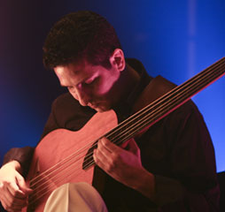
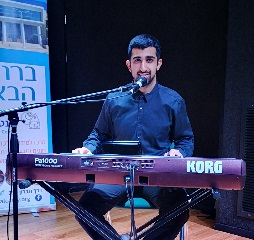

אנסמבל

יניב עובדיה
שירה, סאז, בגלמה וזורנהממשפחה כורדית ירושלמית שורשית. פייטן, זמר, נגן: סאז, בגלמה וזורנה. מנהל להקת מחול מסורתית "צעירי כורדיסטאן", מנהל להקת "כורדי ירושלמי", פעיל במסגרת הארגון הארצי של עולי כורדיסטאן בישראל.
קרא עודאליהו דגמי
מחלוצי המוזיקה האתנית בארץמנגן בסאז ובגיטרה רבעים. השתתף בעבר והיום בעשרות פרויקטים של שילוב מוזיקת מזרח - מערב בארץ ובחו"ל (הברירה הטבעית, אנסמבל היונה, ברי סחרוף, הלויים ועוד).
קרא עוד

ערן הורביץ
נגן בס המתמחה במוסיקה אתנית & פלמנקומשלב בנגינתו רבעי טונים עם טכניקות נגינה מספרד, מתגורר ויוצר בירושלים.
קרא עודעופר בניטה
האיש והקצבהאיש והקצב. ליווה אומנים רבים ובסגנונות מגוונים (הברירה הטבעית, הלווים ועוד). מנגן על תופים, כלי הקשה וסנטור. נגינתו המשלבת בין עולמות מזרח ומערב יוצרת סאונד מיוחד.
קרא עוד

עוז עובדיה
הצעיר שבחבורה, מנגן בחלילים, כלי הקשה וקלידים.משמר את המסורת הכורדית עליה גדל בבית הוריו ואף מנעים בקולו הערב עם מגוון שירים.
קרא עוד